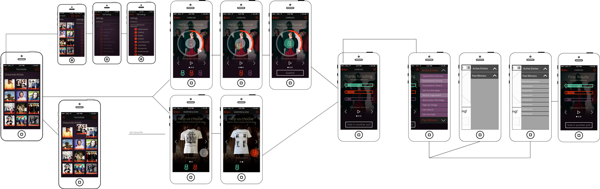
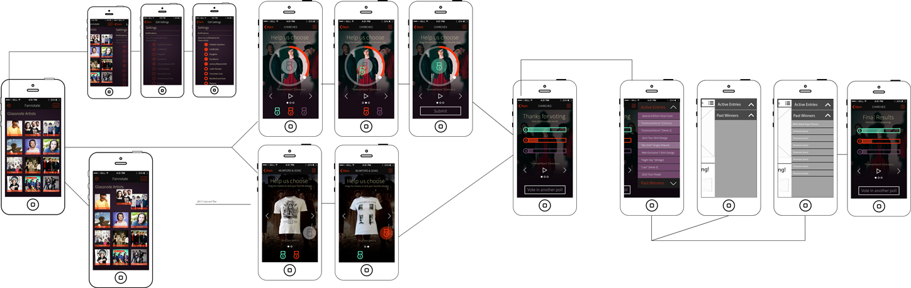
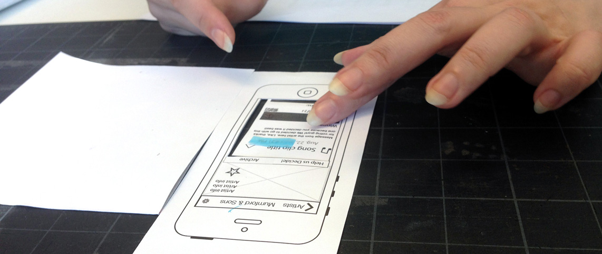

Olivia Brown: Interface Design & Logo
Cristina Keane: Marketing Site Design
We went out in the wild -- we watched human behavior, took notes, and drew conclusions. We surveyed over 100 people ages 18-52 to learn about their music and entertainment preferences, and a few conclusions were drawn:
Listened to music for over 7 hours a week
Also used social media for at least that long.
Listen to music or audio on their phones during their commute
“To design an easy-to-use interface, pay attention to what users do, not what they say. Self-reported claims are unreliable, as are user speculations about future behavior.” – Jakob Nielsen
This app provides an entirely new creation process. Artists provide music samples or graphics (t-shirt choices, band posters, etc.) to directly receive insight from fans. The entire process is driven by the power of communication, thus increasing its popularity and 'amping it up' for release time. It's instant A/B testing — while making fans feel like a part of the band.
It's all about collaboration & discovery.
We did a lot of collaboration on the wireframes. Sorting out the exact user flow of this app is what took the most planning and teamwork. Inspired by _________, by _________, this app was built while simultaneously grasping the innate nuances of mobile-specific user experience concepts.
While the wireframes were being sorted, I simultaneously worked on high level interactions such as screen swiping and menu options with jQuery mobile.
Hands down my favorite part of this app are the interactions and little changes between states — essentially the animations. And these were the most fun and challenging to me, as I got down to coding. I made lists:
The list went on and on...
Luckily, I discovered pep.js, a small jQuery plugin for kinetic dragging and dropping on mobile and desktop ( you can do a whole bunch of other cool things too). It helped a lot of the draggables, including the medals and home screen — allowing little touches like momentum and assisting in the snapping-to-div. So, thanks Brian Gonzalez!
Making fans feel like a part of the band. Giving artists instant feedback. Promoting the talent within a record label — That's Fannotate.